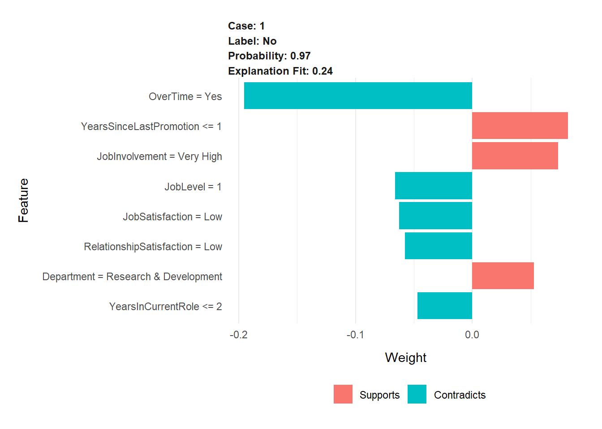
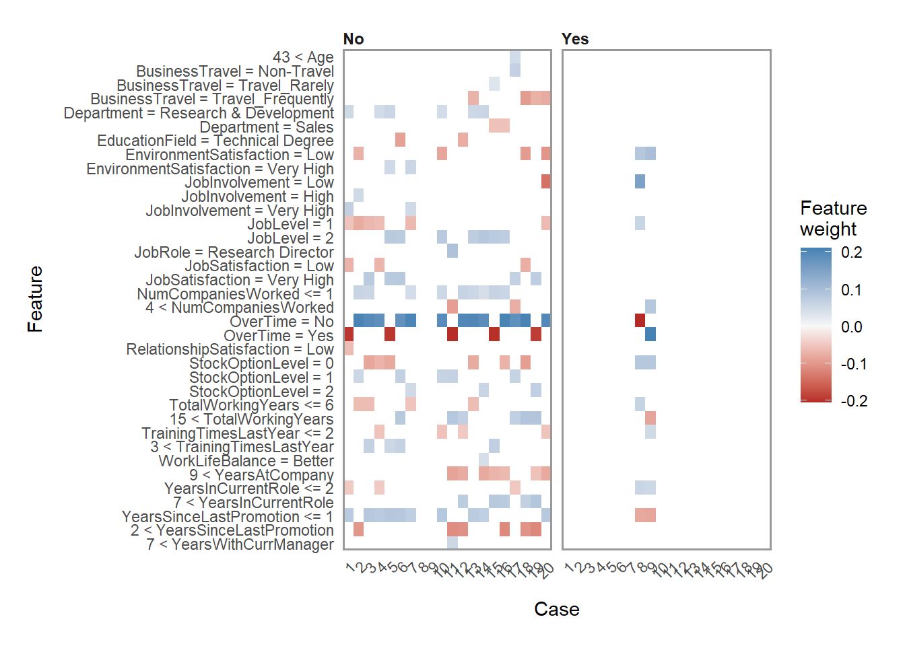

options(knitr.duplicate.label = "allow")
# LIME FEATURE EXPLANATION ----
# 1. Setup ----
# Load Libraries
library(h2o)
library(recipes)
library(readxl)
library(tidyverse)
library(xts)
library(tidyquant)
library(lime)
library(rsample)
# Load Data
employee_attrition_tbl <- read_csv("HR-Employee-Attrition.csv")
definitions_raw_tbl <- read_excel("data_definitions.xlsx", sheet = 1, col_names = FALSE)
# Processing Pipeline
process_hr_data_readable <- function(data, definitions_tbl) {
definitions_list <- definitions_tbl %>%
fill(...1, .direction = "down") %>%
filter(!is.na(...2)) %>%
separate(...2, into = c("key", "value"), sep = " '", remove = TRUE) %>%
rename(column_name = ...1) %>%
mutate(key = as.numeric(key)) %>%
mutate(value = value %>% str_replace(pattern = "'", replacement = "")) %>%
split(.$column_name) %>%
map(~ select(., -column_name)) %>%
map(~ mutate(., value = as_factor(value)))
for (i in seq_along(definitions_list)) {
list_name <- names(definitions_list)[i]
colnames(definitions_list[[i]]) <- c(list_name, paste0(list_name, "_value"))
}
data_merged_tbl <- list(HR_Data = data) %>%
append(definitions_list, after = 1) %>%
reduce(left_join) %>%
select(-one_of(names(definitions_list))) %>%
set_names(str_replace_all(names(.), pattern = "_value",
replacement = "")) %>%
select(sort(names(.))) %>%
mutate_if(is.character, as.factor) %>%
mutate(
BusinessTravel = BusinessTravel %>% fct_relevel("Non-Travel",
"Travel_Rarely",
"Travel_Frequently"),
MaritalStatus = MaritalStatus %>% fct_relevel("Single", "Married",
"Divorced")
)
return(data_merged_tbl)
}
employee_attrition_readable_tbl <- process_hr_data_readable(employee_attrition_tbl, definitions_raw_tbl)
# Split into test and train
set.seed(seed = 1113)
split_obj <- rsample::initial_split(employee_attrition_readable_tbl, prop = 0.85)
# Assign training and test data
train_readable_tbl <- training(split_obj)
test_readable_tbl <- testing(split_obj)
# ML Preprocessing Recipe
recipe_obj <- recipe(Attrition ~ ., data = train_readable_tbl) %>%
step_zv(all_predictors()) %>%
step_mutate_at(c("JobLevel", "StockOptionLevel"), fn = as.factor) %>%
prep()
train_tbl <- bake(recipe_obj, new_data = train_readable_tbl)
test_tbl <- bake(recipe_obj, new_data = test_readable_tbl)
# 2. Models ----
h2o.init()##
## H2O is not running yet, starting it now...
##
## Note: In case of errors look at the following log files:
## C:\Users\ASIFHA~1\AppData\Local\Temp\RtmpQREKwk\file2a4c22176736/h2o_Asif_Habron_started_from_r.out
## C:\Users\ASIFHA~1\AppData\Local\Temp\RtmpQREKwk\file2a4c593f6ca9/h2o_Asif_Habron_started_from_r.err
##
##
## Starting H2O JVM and connecting: . Connection successful!
##
## R is connected to the H2O cluster:
## H2O cluster uptime: 5 seconds 36 milliseconds
## H2O cluster timezone: Europe/Paris
## H2O data parsing timezone: UTC
## H2O cluster version: 3.32.1.3
## H2O cluster version age: 18 days
## H2O cluster name: H2O_started_from_R_Asif_Habron_drs368
## H2O cluster total nodes: 1
## H2O cluster total memory: 1.75 GB
## H2O cluster total cores: 8
## H2O cluster allowed cores: 8
## H2O cluster healthy: TRUE
## H2O Connection ip: localhost
## H2O Connection port: 54321
## H2O Connection proxy: NA
## H2O Internal Security: FALSE
## H2O API Extensions: Amazon S3, Algos, AutoML, Core V3, TargetEncoder, Core V4
## R Version: R version 4.0.5 (2021-03-31)split_h2o <- h2o.splitFrame(as.h2o(train_tbl), ratios = c(0.85), seed = 1234)##
|
| | 0%
|
|======================================================================| 100%train_h2o <- split_h2o[[1]]
valid_h2o <- split_h2o[[2]]
test_h2o <- as.h2o(test_tbl)##
|
| | 0%
|
|======================================================================| 100%# Set the target and predictors
y <- "Attrition"
x <- setdiff(names(train_h2o), y)
automl_models_h2o <- h2o.automl(
x = x,
y = y,
training_frame = train_h2o,
validation_frame = valid_h2o,
leaderboard_frame = test_h2o,
max_runtime_secs = 30,
nfolds = 5
)##
|
| | 0%
## 18:34:34.889: User specified a validation frame with cross-validation still enabled. Please note that the models will still be validated using cross-validation only, the validation frame will be used to provide purely informative validation metrics on the trained models.
## 18:34:34.914: AutoML: XGBoost is not available; skipping it.
|
|======== | 11%
|
|============== | 20%
|
|========================= | 35%
|
|============================== | 43%
|
|=================================== | 50%
|
|======================================== | 58%
|
|============================================= | 65%
|
|===================================================== | 76%
|
|============================================================== | 89%
|
|======================================================================| 100%explainer <- train_tbl %>%
select(-Attrition) %>%
lime(
model = automl_models_h2o@leader,
bin_continuous = TRUE,
n_bins = 4,
quantile_bins = TRUE
)
explanation <- test_tbl %>%
slice(1) %>%
select(-Attrition) %>%
lime::explain(
# Pass our explainer object
explainer = explainer,
# Because it is a binary classification model: 1
n_labels = 1,
# number of features to be returned
n_features = 8,
# number of localized linear models
n_permutations = 5000,
# Let's start with 1
kernel_width = 1
)##
|
| | 0%
|
|======================================================================| 100%
##
|
| | 0%
|
|======================================================================| 100%library(tools)
theme_lime <- function(...) {
theme_minimal() +
theme(
strip.text = element_text(face = 'bold', size = 9),
plot.margin = margin(15, 15, 15, 15),
legend.background = element_blank(),
legend.key = element_blank(),
panel.grid.major.y = element_blank(),
panel.grid.minor.y = element_blank(),
axis.ticks = element_blank(),
legend.position = 'bottom',
panel.spacing.y = unit(15, 'pt'),
strip.text.x = element_text(margin = margin(t = 2, b = 2), hjust = 0),
axis.title.y = element_text(margin = margin(r = 10)),
axis.title.x = element_text(margin = margin(t = 10)),
...
)
}
label_both_upper <- function(labels, multi_line = TRUE, sep = ': ') {
names(labels) <- toTitleCase(names(labels))
label_both(labels, multi_line, sep)
}
# Recreate plot_features()
plot_features_in_explanation <- function(explanation, ncol = 2, cases = NULL) {
type_pal <- c('Supports', 'Contradicts')
explanation$type <- factor(ifelse(sign(explanation$feature_weight) == 1, type_pal[1], type_pal[2]), levels = type_pal)
description <- paste0(explanation$case, '_', explanation[['label']])
desc_width <- max(nchar(description)) + 1
description <- paste0(format(description, width = desc_width), explanation$feature_desc)
explanation$description <- factor(description, levels = description[order(abs(explanation$feature_weight))])
explanation$case <- factor(explanation$case, unique(explanation$case))
explanation$`Explanation fit` <- format(explanation$model_r2, digits = 2)
explanation$probability <- format(explanation$label_prob, digits = 2)
explanation$label <- factor(explanation$label, unique(explanation$label[order(explanation$label_prob, decreasing = TRUE)]))
p <- ggplot(explanation) +
facet_wrap(~ case + label + probability + `Explanation fit`, labeller = label_both_upper, scales = 'free_y', ncol = ncol)
p +
geom_col(aes_(~description, ~feature_weight, fill = ~type)) +
coord_flip() +
scale_x_discrete(labels = function(lab) substr(lab, desc_width + 1, nchar(lab))) +
labs(y = 'Weight', x = 'Feature', fill = '') +
theme_lime()
}
h <- plot_features_in_explanation(explanation = explanation)
h
explanation2 <- test_tbl %>%
slice(1:20) %>%
select(-Attrition) %>%
lime::explain(
explainer = explainer,
n_labels = 1,
n_features = 8,
n_permutations = 5000,
kernel_width = 0.5
)##
|
| | 0%
|
|======================================================================| 100%
##
|
| | 0%
|
|======================================================================| 100%# Recreate plot_explanations()
plot_explanations_data2 <- function(explanation2, ...) {
num_cases <- unique(suppressWarnings(as.numeric(explanation2$case)))
explanation2$case <- factor(explanation2$case, levels = as.character(sort(num_cases)))
explanation2$feature_desc <- factor(
explanation2$feature_desc,
levels = rev(unique(explanation2$feature_desc[order(explanation2$feature, explanation2$feature_value)]))
)
p <- ggplot(explanation2, aes_(~case, ~feature_desc)) +
geom_tile(aes_(fill = ~feature_weight)) +
scale_x_discrete('Case', expand = c(0, 0)) +
scale_y_discrete('Feature', expand = c(0, 0)) +
scale_fill_gradient2('Feature\nweight', low = 'firebrick', mid = '#f7f7f7', high = 'steelblue') +
theme_lime() +
theme(panel.border = element_rect(fill = NA, colour = 'grey60', size = 1),
panel.grid = element_blank(),
legend.position = 'right',
axis.text.x = element_text(angle = 45, hjust = 1, vjust = 1))
p + facet_wrap(~label, ...)
}
plot_explanations_data2(explanation2)